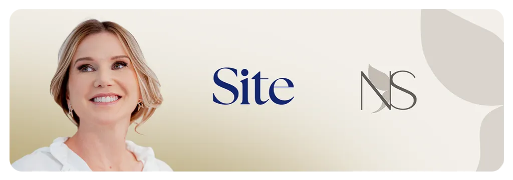

Procedimentos Cirúrgicos
Soluções Médicas Estruturadas com Rigor Técnico
Conheça as áreas de atuação da Dra. Narayana Pauline Serpa em Ipanema.
Consulta e Planejamento Cirúrgico
Avaliação clínica detalhada em Ipanema para mapear suas necessidades, analisar histórico de saúde, indicar exames e definir a conduta cirúrgica mais segura.
Agendar Consulta via WhatsApp
Procedimentos em Cirurgia Plástica
Planejamento de cirurgias plásticas estruturado a partir de exames precisos e análise anatômica criteriosa, priorizando proporção, harmonia e segurança.
Tirar Dúvidas no WhatsApp
Acompanhamento Pré e Pós-Operatório
Protocolo rigoroso de acompanhamento com orientações claras, consultas periódicas de revisão e suporte dedicado ao longo de toda a recuperação.
Falar com a Dra. Narayana